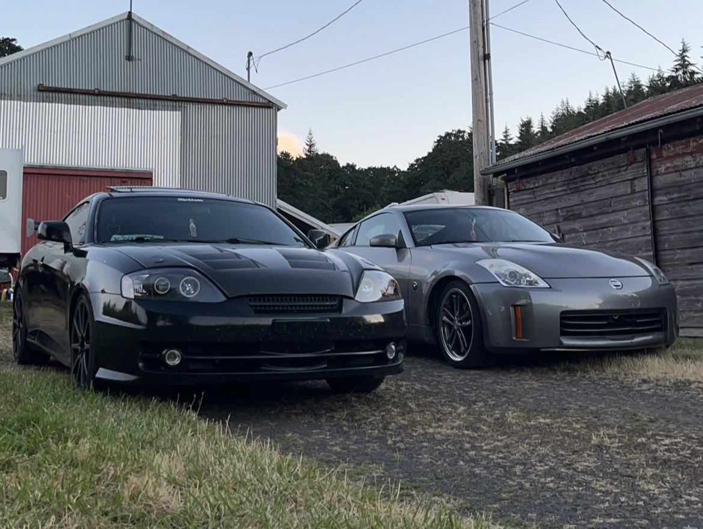

This repository showcases the basic uses of HTML and CSS. It currently has a total of 3 pages including my favorite things and favorite places!
This repository practices using previously learned subjects from CSS and HTML to create a website to display my resume.
This repository demonstrates the use of classes and id’s by creating a website using my cat as a prompt.
This repository practices fixing previous indentation, spacing and HTML tag placements. This project was made by copying and fixing code for Epicodus.
This repository practices using floats by positioning images, creating sidebars and making column layouts. It is focused around a rock band, "The beatles."
This repository practices using columns and changing styles of elements nested within the columns using the idea of cascading. It is used for more practice getting fimiliar with HTML and CSS.
Epicodus got brought up to me as an opportunity for me to expand and learn more about programming in the summer of 2022. At that time, I was working during peak season at a farm, 90-100 hour weeks, so it didnt leave me much room for studying. I then moved to Kansas to get out of state and be with my significant other at the time. Some things in life changed and a couple months later I ended up coming back home to Oregon. With lots of free time I decided now was the perfect time to start a new career!
Ive always been in love with contact sports and have done everything from wrestling, jui-jitsu and boxing
Ive been a gamer since a kid and usually try to become the best at whatever I play
The gym is something i've always found to be a relaxing and helpful hobby to get through life